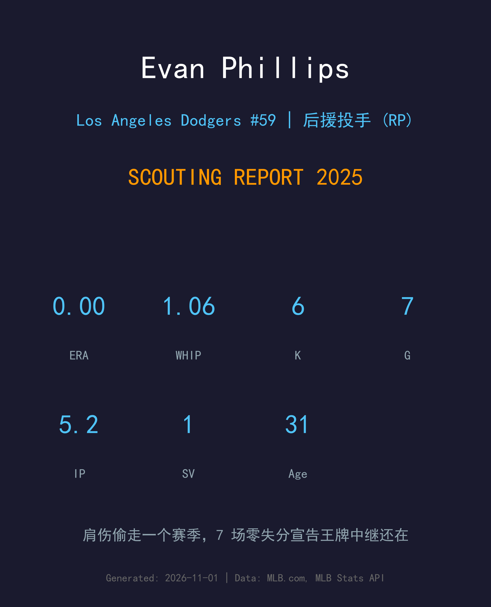
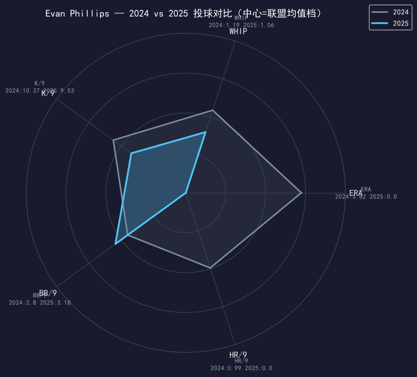
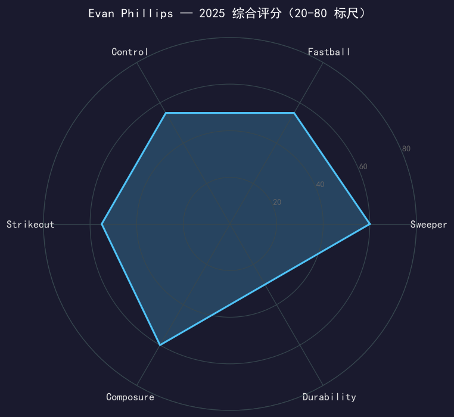

Los Angeles Dodgers #59 | 后援投手 | 右投 | 肩伤偷走一个赛季，7 场零失分宣告王牌中继还在

Evan Phillips 的 2025 年从 3 月 17 日就结束了——至少看起来是：右肩旋转肌袖拉伤让他直接从开幕名单躺进 60 天伤兵名单，一整季的康复反复，直到秋天才重新站上投手板。全年 7 场出赛、5.2 局、零失分——这是他 2025 年的全部，也是他的全部宣言。
这份宣言的分量很重：4 支安打、2 次保送、6 次三振、1.06 WHIP，外加 1 次救援成功与 2 次中继成功——在一个数据小到几乎无效的样本里，他投出了与 2022-23 年那个王牌中继完全相同的形状。横扫滑球（53.3%）依旧锋利，95.5 mph 四缝线依旧有尾劲，肩部术后没有偷走他的投球机制。
从 2025 年 11 月的视角看，Phillips 是道奇牛棚最特殊的资产：一位在过去三年分别交出 1.14、2.05、3.62 自责分率的投手，2025 年几乎白捡了七局零失分。健康的大问号还在，但如果他的肩膀能撑住一个完整赛季，道奇相当于在自家名单深处藏着一枚全明星级的牛棚武器。
64 场、自责分率 1.14、WHIP 0.76——这是 MLB 历史上单季 60 局以上最 dominant 的中继赛季之一，他从无名小卒一跃成为道奇牛棚的架构师。
62 场、2.05 自责分率、24 次救援成功——在球队终结者位置出现空缺时，他无缝接棒第九局，证明了自己不只是单季奇迹。
右肩旋转肌袖拉伤几乎吞掉整个赛季后，季末 7 场零失分回归——用最小的样本，把「Phillips 还行不行」的讨论直接画上了句号。

| 赛季 | G | W-L | ERA | WHIP | IP | SO | BB | K/9 | BB/9 |
|---|---|---|---|---|---|---|---|---|---|
| 2023（终结者年） | 62 | 2-4 | 2.05 | 0.83 | 61.1 | 66 | 13 | 9.69 | 1.91 |
| 2024 | 61 | 5-1 | 3.62 | 1.19 | 54.2 | 63 | 17 | 10.37 | 2.80 |
| 2025 | 7 | 0-0 | 0.00 | 1.06 | 5.2 | 6 | 2 | 9.53 | 3.18 |
2025 的 5.2 局当然不构成任何统计意义，但方向性信号清晰：三振率（9.53）与 2023-24 完全同档，保送率（3.18）略升但在可接受范围，而 WHIP 1.06 说明触球质量没有因肩伤受损。对一位刚从旋转肌袖伤停大半年回来的 31 岁投手，「投球机制零折旧」是最重要也是最好的消息。这份样本回答的不是「他还能不能投」，而是「他值得一个完整健康的 2026 吗」——答案是肯定的。
2025 赛季真实配球数据（MLB Stats API pitchArsenal，5.2 局小样本）：
超过五成的绝对主力，大幅横移与低出手点让打者「看得见打不到」——2022 年 1.14 自责分率的全部秘密，2025 年形状未改。
与滑球互补的直上速球，进垒角度佳；肩伤后球速维持 95+ 是机制完好的最佳证明。
沉球版本的四缝线，诱导滚地球的对付左打工具。
细小横移的过渡球种，内角抢好球与破坏棒头两用。
评估 Phillips 的 2025 年，统计学的规则几乎失效：5.2 局的样本既无法证明他能回来，也无法证明他回不来。真正有效的证据是三件小事：肩伤后球速未掉（95.5 mph）、滑球形状未改（53.3% 使用率、横移幅度在线）、以及教练组在季末把救援机会交给他（1/1 SV）——最后一条尤其重要，因为教练组比任何数据都更诚实地反映了「他们敢不敢用他」。
旋转肌袖伤对依赖横扫滑球的投手从来不是小事：这颗球需要肩部深度外旋，恰恰是伤后最容易丢失的部分。Phillips 季末的回归样本显示外旋活动度基本恢复，但「连续 60 场出赛的累积负荷」与「投 5.2 局」是两种完全不同的生理挑战。他的 2026 年需要严格的工作量管理——道奇很可能像 2024 年对 Treinen 那样，让他在上半年慢慢加量。
从 11 月的视角看，道奇 2026 年牛棚的最深一张牌就是 Phillips：如果健康，他是「第六局就能上、也能守第九局」的双栖武器；如果复发，他的 2025 年也证明了球队可以在没有他的情况下夺冠。这是一笔零风险的正向期权——而所有零风险的正向期权，都值得写在报告的最后一页。

肩膀存疑的隐藏王牌，健康即全明星级
B 级 / 双栖牛棚武器（健康变量）
道奇 2025 季后赛夺冠之路：外卡 2-0 红人 → NLDS 3-1 费城人 → NLCS 4-0 酿酒人 → 世界大赛 4-3 多伦多蓝鸟。
Phillips 没有出现在十月的舞台上——肩伤让他的赛季在 9 月底就结束了，11 月 6 日那纸「自 60 天伤兵名单激活」的通知，是他与这个冠军赛季唯一的交集。但道奇夺冠牛棚的每一位成员都知道：这个冠军里也有他的影子——2022 年那个 1.14 的赛季，正是这座牛棚文化的地基。
Phillips 的 2026 年从「严格限量」开始：上半年每场一局的精心管理，下半年视肩部反应逐步加码。如果一切顺利，9 月的他将是道奇牛棚里最有季后赛经验的右臂——而那正是争冠球队在交易截止日花大价钱也买不到的资产。
理想剧本：健康完整季，重返 60 场 2.50 以下自责分率的王牌中继
现实基准：限量出赛的第六七局专家，偶尔守第九局
上行惊喜：复制 2022 形态，成为国联最 dominant 的后援之一
Evan Phillips 来自马里兰州的索尔兹伯里，2018 年在迈阿密马林鱼登上大联盟——但当时的他只是 roster 边缘的流浪者，先后辗转马林鱼、金莺系统，直到 2021 年被道奇认领，命运才第一次对他露出笑脸。
2022 年是他封神的一年：64 场、自责分率 1.14、WHIP 0.76——一个大联盟历史上单季 60 局以上最 dominant 的中继赛季。2023 年他接棒终结者再投 24 救援，2024 年即使小滑坡（3.62）也守住了 18 次救援。他是道奇这座冠军牛棚里任职最长的架构师之一：2022-24 三年 187 场出赛，见证了球队从常规赛后援群到季后赛机器的完整进化。
2025 年 3 月 17 日，右肩旋转肌袖拉伤几乎偷走了他整整一年；11 月的 Evan Phillips 用 7 场零失分宣告自己仍在。他的故事不是伤病的悲剧，而是「在棒球最残酷的位置上，用一颗横扫滑球反复证明自己」的韧性史诗——只要肩膀还允许，他就会继续投下去。